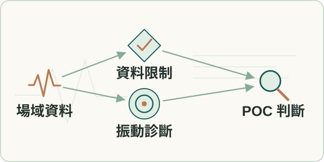

場域 POC
設備振動分析驗證
以場域設備資料檢驗振動診斷及整合報告可行性，記錄資料限制和導入條件。
- 我的角色
- 本人主導基本資訊、前處理、VAD、分類、ISO 與 RUL 驗證順序，以 notebooks 和 AI 協作核對數值與判讀。

工作流程示意（點圖放大）要解決的問題
資料覆蓋、運轉狀態與抽樣方式影響診斷，需驗證報告結論成立的條件。
輸入、處理與產出
- 輸入
- 場域設備資料、基本資訊與原始波形。
- 處理方式
- 依前處理、運轉偵測、分類、嚴重度及壽命的順序驗證，檢查覆蓋與信心。
- 產出
- 整合診斷報告與可重用的方法，留下中間產物及資料限制。
適用範圍
POC支持可行性與導入條件，不能代替全產品部署或正式驗收。
核心問題與我的做法
先定義診斷能說到哪裡，再產出報告
原始資料覆蓋及運轉占比不同，報告若固定輸出分類與壽命，會製造資料不支持的確定性。
將資料充分性、運轉覆蓋及擬合信心作為可視降級條件。 本人主導診斷鏈與品質邊界，AI agents及skills協助處理資料、產生可追溯報告產物。
建立由設備與資料事實走到診斷、嚴重度及時間的整合流程；缺資料時保留限制而非強行結論。
一次性分析怎樣留下可重用的工作方式
客戶分析包含基本資訊、資料前處理及多段診斷；只靠臨時對話不利於重跑及一致審查。
先用 skills 快速迭代，再把節點責任與品質規則轉成可編排流程。 本人主導流程及判讀口徑，與 agents、工程夥伴驗證局部重跑、資料降級及中間產物，再銜接後續報告服務。
留下從POC到可重用報告工作的演進路徑；後續服務的合併範圍依報告專案核對。
成果與驗證
建立可複用診斷與報告方法，保留低 coverage 及低信心時的降級，供後續產品化。
VAD · ISO 20816 · LangGraph